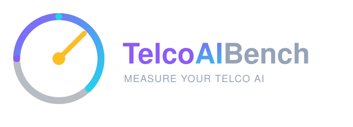
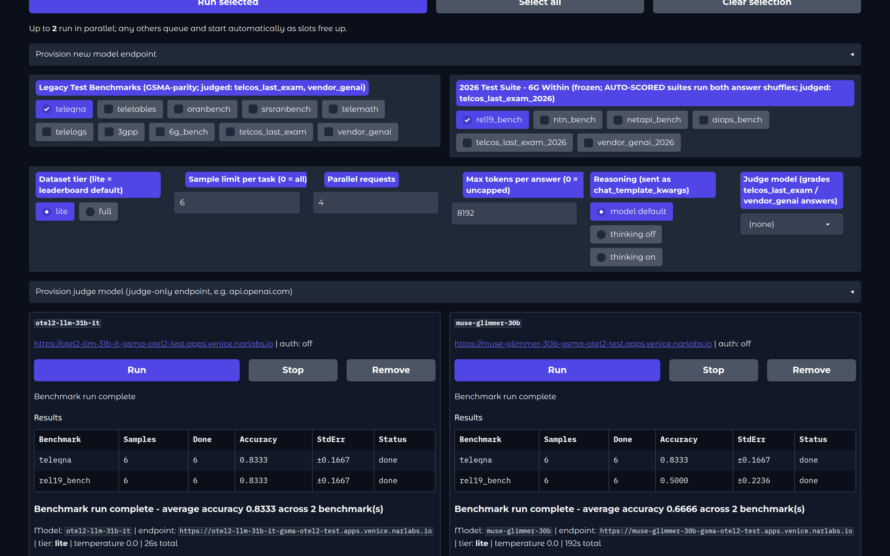
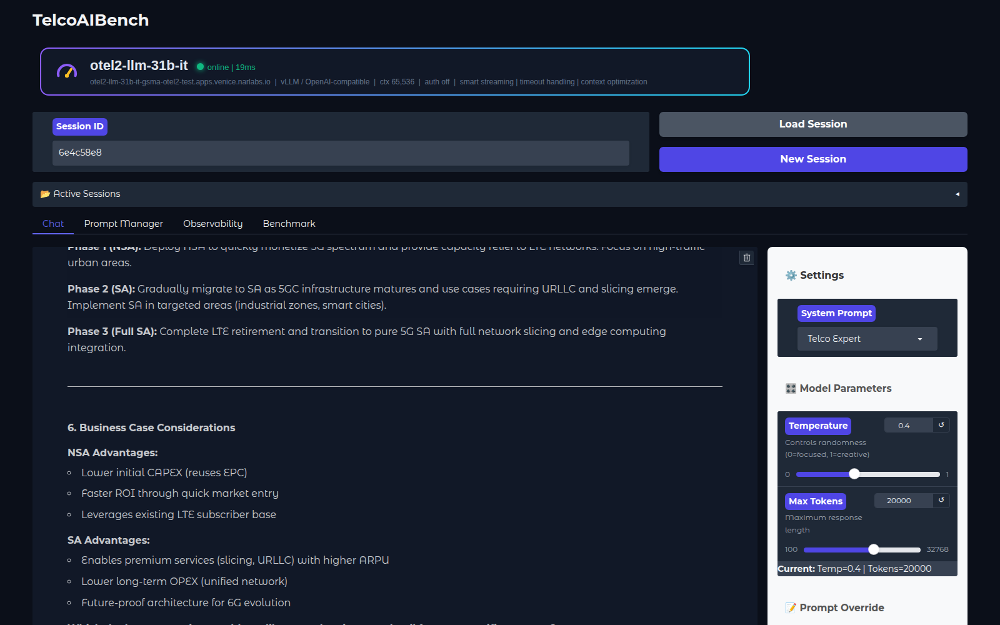
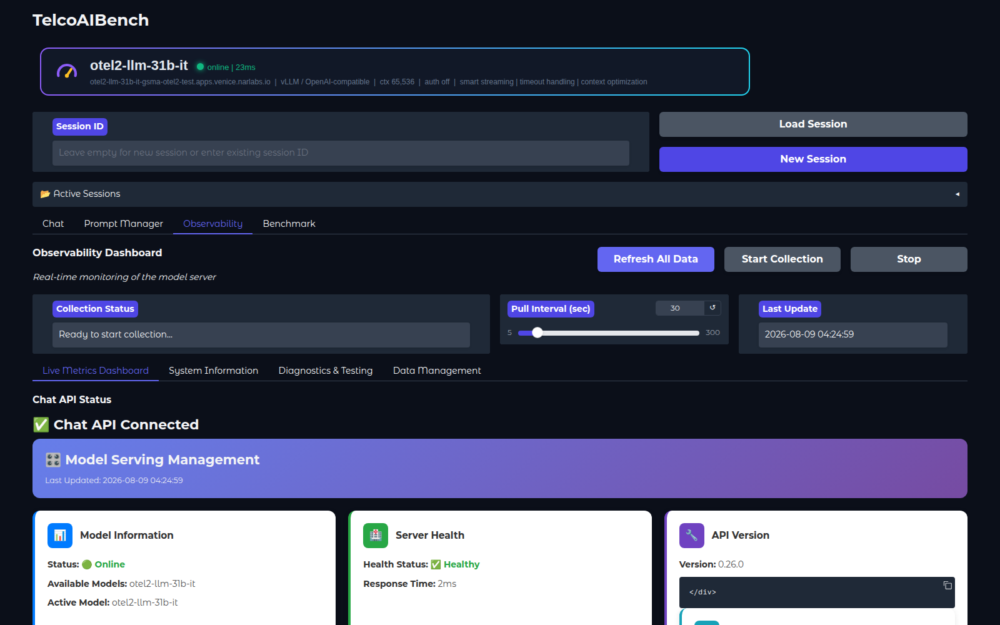
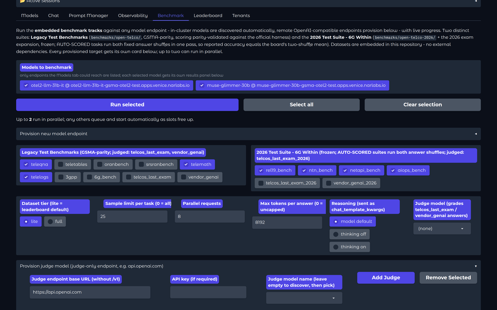
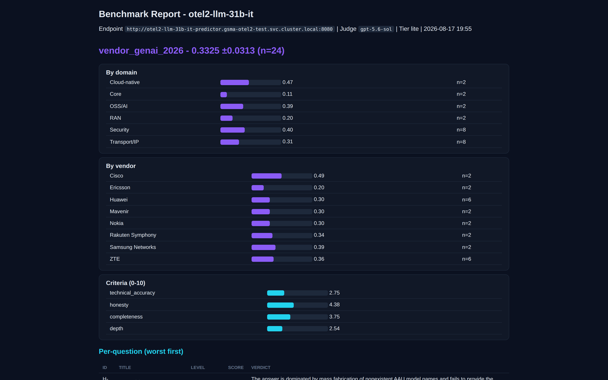

An open, self-contained portal & benchmark suite to measure any AI model for Telco use - interact with it, observe it, benchmark it. Datasets embedded in the repo within.

Leaderboard numbers without pinned model revisions, datasets, and harness versions cannot be verified. TelcoAIBench packages everything needed to reproduce a telco AI evaluation - the runner, the datasets, and the receipts - inside one repository.
Expert telco chat personas, a live model identity strip, prompt engineering, and a real-time vLLM observability dashboard. Point it at any OpenAI-compatible endpoint with two environment variables.
The 8 Open-Telco benchmarks plus 2 LLM-as-judge suites, with every dataset embedded as gzipped JSONL. Run from the UI or the CLI - the engine is identical, single-file, stdlib + requests only.
Scoring parity-validated against the official GSMA harness (within 1 point on all 7 leaderboard tasks), plus a full leaderboard-claim verification report showing why reproducibility discipline matters.
One Gradio app, four tabs: Chat, Prompt Manager, Observability, Benchmark.
Multi-persona conversations - Telco, Network, Cloud, Storage experts or your own - with persistent shareable sessions, auto-streaming for large contexts, and document upload. The live hero strip shows the connected model's status, latency, and context window at all times.


The dashboard polls the model server's metrics endpoint directly: request rates, latency, token throughput, cache utilization, health, and efficiency analysis - with Plotly visualizations and automated collection.
Ten suites, one engine. Provision any number of target models - each gets its own card, two run side by side, and every run can be hard-stopped in seconds.
| Suite | Tasks | Scoring |
|---|---|---|
| Open-Telco | teleqna teletables telemath telelogs 3gpp oranbench srsranbench 6g_bench | Deterministic - ported 1:1 from the official harness, parity-validated |
| Telco's Last Exam | telcos_last_exam - 30 questions, 8 domains, 3 difficulty tiers, 246 points | LLM-as-judge vs. machine-verified answer keys with grading notes; points-weighted, per-domain breakdowns |
| Vendor GenAI | vendor_genai - 24 deep-dives: 6 vendors x 4 domains, honesty traps included | Per-criterion judging (accuracy 0.40, honesty 0.25, completeness 0.20, depth 0.15) with fact anchors and fabrication bait |
Judged suites have no deterministic scorer - a judge model you provision grades every answer and goes on record with the results.
The dedicated judge form takes an endpoint URL, API key, and model name - for example api.openai.com with GPT-5, or any frontier-class endpoint. Judge endpoints are stored separately and never become benchmark targets.

Every clean, full-set run recorded in the portal can be published here as a versioned snapshot. Composite = importance-weighted mean (judged suites weigh heaviest); ranking requires 70% weight coverage, full-set runs only, and one consistent judge.
Telco AI is entering its AI Grid era: inference is leaving the central cloud and distributing across a five-tier fabric that runs from the radio site to the core data center. Every tier has a different latency envelope, hardware budget, and workload class - and the industry question is no longer "which model is best?" but "which model, at which tier, for which task, under which constraints?"
Tier envelopes are illustrative; placement decisions require workload-specific benchmarking. Parameter count alone tells you nothing about whether a model earns its latency budget on 3GPP prose, RAN logs, or link-budget math. TelcoAIBench measures exactly the three axes placement logic needs: accuracy per telco workload class, latency & token economics, and deployment reality (VRAM, precision, serving stack).
Self-reported leaderboard numbers routinely diverge from pinned reproduction - our verification report and the TelecomGPT-R1 claims review document exactly how protocol choices move scores by double digits. Every number here ships with its harness version, prompts, precision, and per-question transcripts.
All models run the identical pipeline: same prompts, same greedy decoding, same serving stack, same datasets embedded in this repo. Judged suites built from unpublished questions act as the contamination discriminator that public benchmarks cannot provide. Comparable numbers, or no numbers.
Where each benchmarked model belongs on the AI Grid's placement tiers - derived from measured accuracy, decode speed, verbosity, and VRAM footprint, not from parameter count. Each model is shown at the closest-to-the-edge tier it measurably fits - any model can also serve from deeper tiers, so the edge-most viable placement is the decision-relevant one. Tier 0 (RAN-embedded, <10M params on CPU/NPU) excludes generative LLMs by design.
Every judged run ends with per-domain, per-difficulty, per-vendor and per-criterion breakdowns - and a downloadable report that shows exactly which questions failed, how, and at what level.

The run report (HTML + markdown, saved to the persistent state volume) lists each question with its score, difficulty, verdict, the required elements the candidate missed, and the judge's written rationale - the difference between a number and a diagnosis.
Four short screen-capture tours with voice-over - the portal, benchmarking, judge models, and the CLI. Around one minute each.
Live model hero strip, expert telco chat, prompt personas, and the observability dashboard.
Provision targets, pick suites and tiers, run two models side by side, and hard-stop a live run.
Provision a judge with model discovery, run the judged suites, and read structured graded results, breakdowns, and the downloadable failure report.
The same engine from the command line: embedded datasets, judged runs, provenance, and receipts.
Two environment variables between you and a running portal. No source edits.
# 1. serve a model anywhere (example: vLLM) vllm serve <your-model> --port 8080 # 2. point TelcoAIBench at it pip install 'gradio>=5,<6' && pip install -r requirements-v2.txt export SME_API_ENDPOINT="https://my-model-route.apps.mylab" export SME_MODEL_NAME="my-served-model-name" python sme-web-ui-v2.py # :30180 # 3. or benchmark from the CLI (identical engine) cd benchmarks/open-telco python3 otel_eval.py --endpoint https://<model-route>/v1 --model <name> # judged suites: add a judge python3 otel_eval.py --tasks telcos_last_exam \ --endpoint https://<candidate>/v1 --model <name> \ --judge-endpoint https://api.openai.com/v1 --judge-model gpt-5 --judge-key $KEY